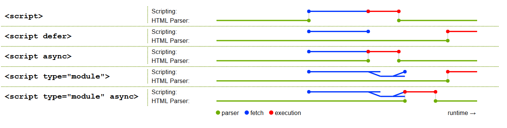
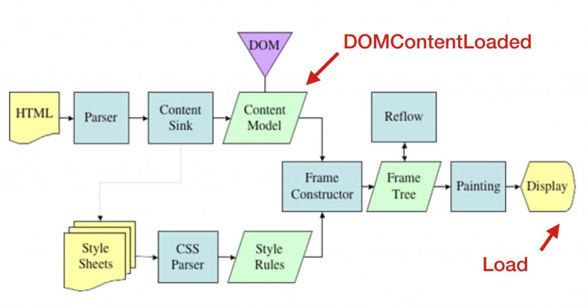

HTML 页面中的资源加载策略
HTML 页面及页面内包含的资源一般基于 HTTP 协议进行资源的请求和获取。
浏览器根据照资源对页面的影响计算加载的优先级，并按照优先级下载资源。
我们可以使用异步脚本、preload和prefetch等方法更细粒度的对优先级进行微调。
页面在资源加载之前会进行安全检查，阻止不满足条件的资源加载并报错，详见内容安全策略 CSP。
浏览器缓存机制
按照浏览器的缓存位置分类，优先级从高到低：
- Memory Cache：内存缓存，主要缓存为页面已加载的图片、样式、脚步等资源，特点是：
- 生命周期短，会随页面关闭失效
- 通过
prefetch预加载的资源就是在内存中缓存
- Service Worker离线缓存
- Service Worker 是运行在浏览器背后的独立线程，可以充当 Web 程序和后端服务的代理，实现请求缓存等功能。
- Disk Cache：硬盘缓存，相对于内存缓存速度稍慢，但是时效性更久，HTTP 缓存是使用的硬盘缓存
- Push Cache：HTTP2 推送缓存，以上三种缓存都未命中才会使用
资源加载优先级
浏览器默认加载优先级：
- 第一级：会影响页面布局的资源，包括：html、css、front
- 第二级：preload 资源、script、xhr
- 第三级：图片、音频、视频
- 第四级：prefetch 资源
在默认优先级基础上浏览器会根据一些规整对优先级进行调整，例如：
- 将同步 XHR 请求优先级调为最高
- 现代浏览器为了提升用户体验会将首屏图片优先级调高
- 脚本规则
- 异步脚本的优先级会降低
- 在页面第一张图片之前的标记为
early**，提升优先级 - 在页面第一张图片之后的标记为
late**

异步脚本
HTML 页面通过script标签可以加载外部 JS 脚本，总共有三种方式：
- 普通模式：
<script src="path.js" /> - 延迟模式：
<script src="path.js" defer /> - 异步模式：
<script src="path.js" async />
异步模式优先级高于延迟模块，如果在script标签上同时设置async和defer属性，生效的是async属性。

如上图不同的模式会对页面的解析和渲染产生不同的影响。
- 普通模式：在 DOM 解析过程中遇到
script标签会停止解析，等待脚本加载运行完成后再继续进行解析。 - defer 延迟模式：
- 加载行为：脚本文件会在后台异步下载，不回阻塞 HTML 文档的解析
- 执行时机：当 HTML 文档解析完成后，按照脚本在文档的出现顺序依次执行
- 适用场景：依赖完整 DOM 结构的脚步，或者脚步之间有依赖关系的场景
- async 异步模式：
- 加载行为：脚本文件在后台异步下载，通用不阻塞 HTML 文档解析
- 执行时机：一旦脚本下载完成，立即执行，可能在文档解析过程中执行
- 执行顺序：脚本执行顺序取决于下载完成的先后顺序
- 适用场景：适用于独立的脚本，如网站统计或广告脚本，这些脚本没有依赖关系
PreFetching&Preloading
prefetch和preload为我们提供了更细粒度的控制浏览器加载资源的方法，在<head>中使用<link>标签声明，告诉浏览器提前进行加载，后执行，加载和执行解耦。
预提取(preload)
作用：用来告诉浏览器当前页面的必须资源，浏览器会高优加载这些资源
特性：preload加载的样式和脚本在加载完成后不会执行，加载过程也不会阻塞页面渲染。
- 场景一：为了避免 JS 脚本阻塞页面渲染，我们通常会将脚本放
<body>底部加载，使用preload可以实现在不阻塞页面渲染的前提下尽早的开始资源加载。 - 场景二：在使用自定义字体时常常会发生字体样式闪动（FOUT，Flash of Unstyled Text），原因是字体时通过 CSS 引入的，在 css 解析后才会加载，可以使用 preload 告诉浏览器提前进行字体加载。
<head>
<meta charset="utf-8">
<title>JS and CSS preload example</title>
<link rel="preload" href="style.css" as="style">
<link rel="preload" href="main.js" as="script">
<link rel="preload" href="fonts/xxx.woff2" as="font" type="font/woff2" crossorigin>
<link rel="stylesheet" href="style.css">
</head>
<body>
<h1>bouncing balls</h1>
<canvas></canvas>
<script src="main.js" defer></script>
</body>
注意：
type属性可以优化preload，浏览器之后对执行的类型进行预加载- 当预加载资源使用 CORS(例如 font、xhr、fetch) 加载时，必须加上
crossorigin属性，否则会进行多次加载，即使这个资源不是跨域请求也需要。- 原因是不添加
crossorigin属性，浏览器会以匿名的方式请求，preload 相对于正常请求，请求头中没有origin字段
- 原因是不添加
预加载(prefetch)
告诉浏览器将来可能会用到的资源，告诉浏览器在主要内容加载完成之后加载，利用浏览器空闲时间下载，以提升之后的用户体验。
<!-- 资源预加载 -->
<link rel="prefetch" href="next-page.html">
<link rel="prefetch" href="next-styles.css" as="style">
<link rel="prefetch" href="next-script.js" as="script">
<!-- DNS预解析： -->
<link rel="dns-prefetch" href="//xxx.com">
<!-- http预连接：将建立对该域名的TCP链接 -->
<link rel="preconnect" href="https://xxx.com">
<!-- 页面预渲染：将会预先加载链接文档的所有资源 -->
<link rel="prerender" href="//xxx.com">
页面加载事件
页面加载主要节点和事件：
- 页面加载完成
- 资源加载完成
- 页面关闭

页面加载完成DOMContentLoaded
HTML 文档加载和解析完成之后触发，DOM 已经就绪（DOMTree Ready），但像 <img> 和样式表之类的外部资源可能尚未加载完成。
浏览器在 HTML 页面下载完成后会自上而下进行解析并开启下载进程，对页面引用的资源进行优先级排序并下载
JS 脚本和 CSS 样式会阻塞页面的解析和渲染，影响DOMContentLoaded事件触发，详见关键渲染路径&渲染优化
document.addEventListener("DOMContentLoaded", ready);
资源加载完成onload
外部资源已加载完成。浏览器不仅加载完成了 HTML，还加载完成了所有外部资源：图片，样式等。
// 方式一
window.addEventListener('load', (event) => {
// 方式二
window.onload = function() {};
页面关闭
用户准备离开beforeunload，如果访问者触发了离开页面的导航（navigation）或试图关闭窗口。可以检查用户是否保存了更改，并询问他是否真的要离开
window.onbeforeunload = function() {
return "There are unsaved changes. Leave now?";
};
用户马上离开unload，当用户关闭页面时触发，但是我们仍然可以启动一些操作，例如发送统计数据。
window.addEventListener("unload", function() {});
获取页面状态
使用document.readyState属性可以获取当前加载状态的信息，有以下属性：
loading： 文档正在被加载。
interactive： 文档被全部读取。与DOMContentLoaded几乎同时发生，但是在DOMContentLoaded之前发生。
complete： 文档被全部读取，并且所有资源（例如图片等）都已加载完成，与window.onload几乎同时发生，但是在window.onload之前发生。
// 监听状态变化
document.addEventListener('readystatechange', callback);
// DOM加载完成后立刻执行
function doSomething() { /*...*/ }
if (document.readyState == 'loading') {
// 仍在加载，等待事件
document.addEventListener('DOMContentLoaded', doSomething);
} else {
// DOM 已就绪！
doSomething();
}